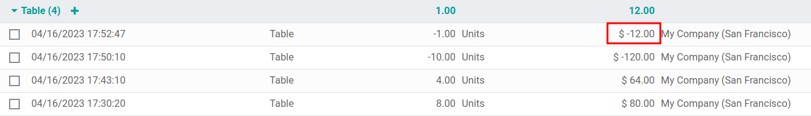
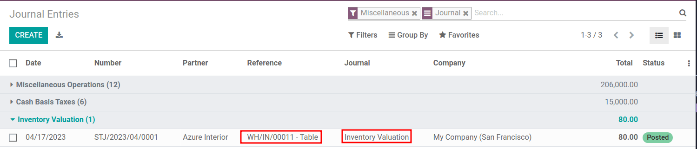

退货商品的平均价格¶
*平均成本估价*（AVCO）是一种存货估价方法，它根据一个时期内购买或生产货物的总成本除以库存物品的总数来评估成本。存货估价用于：
反映公司资产的价值；
追踪未售出商品数量；
计算尚未产生利润的商品的货币价值；
报告整个季度的货物流动情况。
由于 AVCO 使用加权平均法来评估成本，因此非常适合只大量销售几种不同产品的公司。在 Odoo 系统中，每次收到产品时，成本计算分析都会*自动更新*。
因此，当货物退回供应商时，Odoo 会自动生成会计分录以反映库存估值的变化。但是，Odoo 不会 自动更新|AVCO|计算，因为:ref:`有可能造成与<inventory/avg_price/leaving_inventory>`存货估价不一致。
注解
This document addresses a specific use case for theoretical purposes. For instructions on how to set up and use AVCO, refer to the inventory valuation configuration doc.
配置¶
要在产品上使用平均成本库存估价，请导航到:menuselection:库存-->配置-->产品类别`并选择将使用 |AVCO| 的类别。在产品类别页面，将 :guilabel:`成本计算方法 设置为 平均成本（AVCO），将 库存估价 设置为 自动。
使用平均成本估值¶
平均成本方式在仓库收到产品时调整库存估价。本节将解释其工作原理，如果不需要解释，请跳至 返回供应商用例 部分。
公式¶
当新产品上市时，每种产品的新平均成本将根据公式重新计算：
旧数量：收到新货物前的产品库存数量；
** 旧平均成本**：根据上次库存估价计算出的单个产品的平均成本；
到货数量：新货物中到货产品的数量；
采购价：接收产品时的产品估计价格（因为供应商账单可能稍后到达）。该金额不仅包括产品价格，还包括附加费用，如运费、税金和 落地成本。收到供应商账单时，该价格将被调整；
最终数量：库存移动后的库存数量。
重要
当产品离开仓库时，平均成本**不会**发生变化。关于为什么**不会**调整平均成本估值，请阅读:ref:此处`<inventory/avg_price/leaving_inventory>`。
计算平均成本¶
要了解产品的平均成本如何随每次装运而变化，请看下表中的仓库业务和存货移动。每个例子都说明了平均成本估价如何受到影响。
作业 |
入库价值 |
库存价值 |
在手数量 |
平均成本 |
|---|---|---|---|---|
$0 |
0 |
$0 |
||
收到 8 张桌子，每张 $10 |
8 * $10 |
$80 |
8 |
$10 |
收到 4 张桌子，每张 $16 |
4 * $16 |
$144 |
12 |
$12 |
运送 10 张桌子 |
-10 * $12 |
$24 |
2 |
$12 |
Exercise
通过复习“收到 8 张桌子，每张 $10”示例，确保理解上述计算。
初始时，产品存量为 0，因此全部价值为 $0。
在第一次仓库操作中，收到了 8 张桌子，每张桌子的价格为 $10。使用 公式 计算平均成本：
因为桌子*进货量*为`8`，每张桌子的*购买价格*为
$10，库存价值评估为`$80`；
$80`除以要存储的桌子总数 `8。$10即为第一批送货的每张桌子的平均成本。
要在 Odoo 中验证这一点，请在 采购 应用程序中，以 $10 的价格订购 8 件新产品 桌子，不移动之前库存。
In the table’s Product Category field in the General Information tab of
the product form, click the ➡️ (arrow) icon, to open an External Link to
edit the product category. Set the Costing Method to Average Cost (AVCO) and
Inventory Valuation to Automated.
然后，返回采购订单。点击:guilabel:确认订单 并点击 收到产品 确认收货。
接下来，通过导航至 查看产品接收生成的库存估值记录。选择 桌子 下拉菜单，查看*估价层*的 总值 列（特定时间点的库存估价 = 在手数量 * 单价）。库存的 8 张桌子价值 80 美元。

小技巧
当产品类别的 成本计算方法 设置为 AVCO 时，产品的平均成本也会显示在产品页面本身的 常规信息 标签下的 成本 字段中。
产品交付（使用案例）¶
对于出货，:ref:`出货产品对平均成本估价 <inventory/avg_cost/definite_rule>`没有影响。虽然平均成本估价不会重新计算，但由于产品已从库存中移除并交付到客户所在地，因此库存值仍会减少。
Exercise
为了证明平均成本估价没有重新计算，请查看“交付 10 张桌子”示例。
因为要向客户发送 10 张桌子，所以*进货量*为`-10`。以前的平均成本（
$12）用于代替供应商的*采购价格*；*入库价值*为`-10 * $12 = -$120`；
旧*库存价值*（
$144）与新*库存价值*（-$120）相加，得出`$144 + -$120 = $24`；12张桌子运出10张后，只剩下2张桌子。因此，当前*库存价值*（$24）除以库存数量（2）；$24 / 2 = $12，即与前一次操作的平均成本相同。
要在 Odoo 中验证这一点，请在 销售 应用程序中销售 10 张桌子，验证交付，然后通过 查看库存估值记录。在最上面的估价层中，交付 10 个桌子会使产品价值减少 -$120。
注：本库存估值记录中未体现的是此次销售的收入，因此这一减少并不是公司的损失。

将物品退回供应商（用例）¶
由于支付给供应商的价格可能与使用 AVCO 方法对产品估值的价格不同，Odoo 会以特定方式处理退回的项目。
产品按原价退还给供应商，但
内部成本估值保持不变。
上述 示例桌子 更新如下：
作业 |
数量*平均成本 |
库存价值 |
在手数量 |
平均成本 |
|---|---|---|---|---|
$24 |
2 |
$12 |
||
退还 $10 购买的 1 张桌子 |
-1 * $12 |
$12 |
1 |
$12 |
换言之，Odoo 将退还给供应商的产品视为另一种形式的产品出库。对 Odoo 来说，由于桌子的单位价值为 $12 ，因此产品退回时库存价值会减少 $12；最初的购买价格 $10 与桌子的平均成本无关。
Example
要返回以 $10 的价格购买的单张桌子，请访问 库存 应用程序中的 8 张在练习 1 中购买的桌子收据，方法是进入 库存概览)，单击 收据，然后选择所需收据。
然后，在已验证的交货单上单击 退回，并在反向传输窗口中将数量修改为 1。这样就为该表创建了一个出库装运。选择 验证 确认出货。
返回 查看出货如何使库存价值减少 $12。
Eliminate stock valuation errors in outgoing products¶
当对运出的货物重新计算平均成本估价时，公司的存货可能会出现不一致的情况。
为说明这一错误，下表展示了一种情况：一张桌子已发运给客户，另一张桌子则按购买价退还给供应商。
作业 |
数量*价格 |
库存价值 |
在手数量 |
平均成本 |
|---|---|---|---|---|
$24 |
2 |
$12 |
||
向客户运送 1 件产品 |
-1 * $12 |
$12 |
1 |
$12 |
退回 1 件最初以 $10 购买的产品 |
-1 * $10 |
$2 |
0 |
$12 |
在上述最终操作中，尽管桌子的库存还有 0 张，但桌子的最终库存估值为 2 美元。
正确方法
使用平均成本对退货进行估值。这并不意味着公司用 $10 购买的产品可以换回 $12；用 $10 退回的产品内部估值为 $12。
Anglo-Saxon accounting¶
除使用|AVCO|外，使用**盎格鲁-撒克逊会计**的公司还保留一个持有账户，用于追踪支付给供应商的金额。一旦供应商交付订单，库存价值**就会根据入库产品的供应商价格增加。持有账户（称为**库存输入）被记入贷方，只有在收到供应商账单后才进行对账。
下表反映了日记账分录和账户。当尚未收到供应商账单时，*库存输入*账户存储用于支付供应商的款项。如果退货产品*估价*与购买价格之间存在差价，为了平衡账目，需要创建一个*价差*账户。
作业 |
库存输入 |
价格差异 |
库存价值 |
在手数量 |
平均成本 |
|---|---|---|---|---|---|
$0 |
0 |
$0 |
|||
收到 8 张桌子，每张 $10 |
($80) |
$80 |
8 |
$10 |
|
收到供应商的账单$80 |
$0 |
$80 |
8 |
$10 |
|
收到 4 张桌子，每张 $16 |
($64) |
$144 |
12 |
$12 |
|
收到供应商的账单$64 |
$0 |
$144 |
12 |
$12 |
|
向客户交付 10 张桌子 |
$0 |
$24 |
2 |
$12 |
|
退还 $10 购买的 1 张桌子 |
$10 |
$2 |
$12 |
1 |
$12 |
收到供应商的退款账单$10 |
$0 |
$2 |
$12 |
1 |
$12 |
产品接收¶
摘要¶
在接收产品时，Odoo 通过预先将与接收货物价格相匹配的金额转入 负债账户， 库存输入，确保公司能够支付购买的货物。然后，一旦收到账单，持有账户中的金额就会转入*应付账款*。转入该账户意味着账单已支付。收到供应商账单后，**库存输入**即进行对账。
库存估价是计算每种库存产品内部价值的一种方法。由于产品的**估值价格**与产品的实际**购买价格**之间存在差异，因此**库存估值**账户与**库存输入**账户的贷方和借方操作无关。
要理解全部，请看以下细目。
收到产品时的账目平衡¶
在此示例中，某公司的产品 桌子 库存量为零。然后，从供应商处收到 8 张桌子：
**库存输入**账户存储欠供应商的贷方款项
$80。该账户中的金额与库存价值无关。价值
$80的桌子**到货**（将*库存价值*账户金额记为**借方**$80），并且必须为收到的货物支付`$80`（将*库存输入*账户的金额记为贷方
$80）。
在Odoo上¶
当收到使用 AVCO 成本计算方法的货物时，Odoo 会生成会计分录。选择产品页面上 产品分类 字段旁边的 ➡️（箭头）`图标，配置 :guilabel:`差价账户。
在 账户属性’下，输入账户名称并单击 :guilabel:`创建和编辑’，创建新的 :guilabel:`价差账户’。然后将账户 :guilabel:`类型 设置为 支出，点击 保存。

然后，在 采购 应用程序或 库存 应用程序中接收货物，并导航至 。在列表中找到与相关产品的仓库接收操作相匹配的 参考号。
点击 8 张桌子这一行。会计分录显示，当收到这 8 张桌子时，库存价值 账户增加了 $80。相反，库存输入 账户（默认设置为`库存中间（已收到）`账户）贷方为 $80。

供应商账单收到时账户已平衡。¶
在此示例中，某公司开始时的产品（桌子）库存为零。然后，从供应商处收到 8 张桌子。当从供应商处收到 8 张桌子的账单时：
使用**库存输入**账户中的`$80`支付账单。这样就抵消了，账户中现在有
$0。借记 股票输入 `80`美元（调节该账户）。
贷记**应付账款**`80`美元。该账户记录公司欠额，因此会计人员使用该金额向供应商开具支票。
在Odoo上¶
供应商要求付款后，导航到 并选择 8 个桌子的 : abbr:PO（采购订单）。在 PO（采购订单）`中，选择 :guilabel:`创建账单。
切换到 Journal Items 选项卡，查看 $80 如何从持有账户 库存中期（已收）`转入 `应付账款。 确认 账单，记录向供应商付款。

产品交付¶
在 上述示例桌子 中，当向客户交付 10 件产品时，**库存输入**账户不受影响，因为没有新产品进入。简单来说：
**存货估值**记入
$120。从存货估值中减去$120，表示有价值$120的产品离开公司。借记**应收账款**，记录销售收入。

产品退货¶
在 上述示例桌子 <inventory/avg_price/price-table>`中，当向供应商退回 1 件以`$10`购买的产品时，公司预计供应商的**应付账款**账户中会有`$10。但是，**库存输入**账户必须借记`$12`，因为退货时的平均成本是`$12`。缺失的 $2 在 差额账户 中核算，该账户设置在产品的 产品类别 中。
注解
*差额账户*的行为因本地化而异。在这种情况下，该账户用于存储供应商价格与*自动*库存估价方法之间的差额。
摘要：
借记**库存输入**账户
$10，将桌子从库存移至库存输入。此移动表明该桌子将用于出货。借记**库存输入**额外的`$2`，计入**差额**。
**库存估值**账户记入贷方`$12`，因为该物品正在离开库存。

收到供应商的退款后，
将**库存输入**账户记入贷方`$10`，以调整桌子的价格。
借方**应付账款**`$10`，以便会计人员在账簿中收集和登记付款